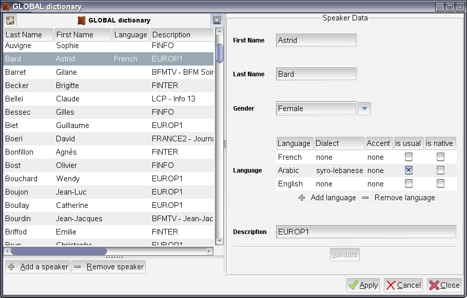
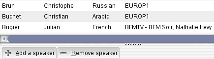
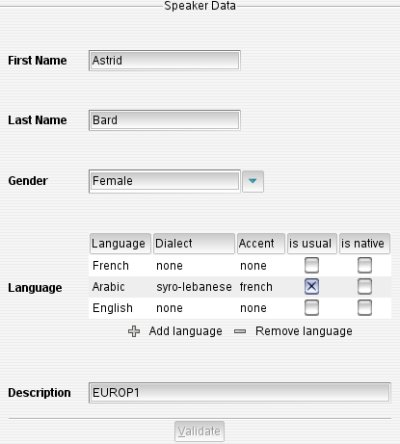
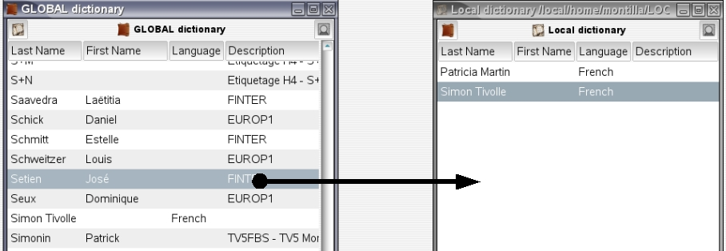
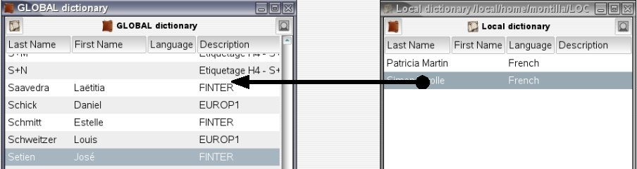
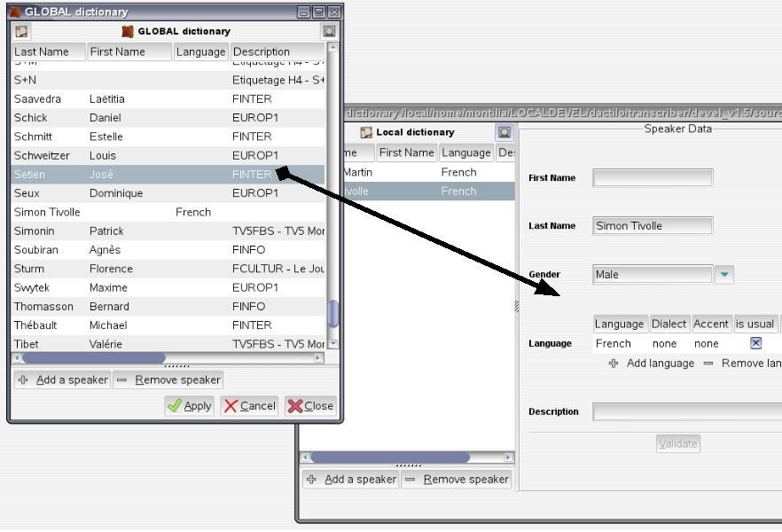

Both dictionaries are very similar in form and behaviour.
The global dictionary can be opened using <ctrl+g> shortcut, or Speakers > Global speaker dictionary menu option.
The file dictionary can be opened using <shift+alt+g> shortcut, or Speakers > File speaker dictionary menu option, or double-clicking on a turn tag in the text widget of the annotation editor.
Speaker dictionary features are described hereafter.

The speaker dictionary windows shows on its left side the list of speakers it contains, and on its right side the details for currently selected speaker.
| The Show/Hide details button allows to show or hide speaker details subwindow. By default, speaker details are shown. |
| The Raise local dictionary button allows to open or raise in foreground the local dictionary, i.e speaker dictionary of current annotation file. |
| The Raise global dictionary button allows to open or raise in foreground the global dictionary. |
|  | Clicking on any column header allows to sort the list on corresponding item, by ascending alphabetical order. Browsing through the speakers' list displays details for each speaker in turn in the speaker details subwindow. |
Clicking on Add a speaker button opens speaker details subwindow with empty fields, so that user can fill in new speaker description.
Another way to add a speaker to current dictionary is to drag a speaker entry from another dictionary, and drop it on the current list. This can be used from global to local dictionary, or from local to global (providing current user gives access to global dictionary), or from local to local.
Clicking on the Remove speaker button deletes speaker from the dictionary. If a local dictionary is edited, and if the speaker has associated turns, then removal is prohibited.
|  | The following items can be defined for the current speaker:
WARNING ! Edits are not saved until Validate has been pressed. Thus, if another speaker is selected in the list, edits for the current speaker will be lost. |
When editing a local dictionary, if speaker name or gender has been modified, the turn tags in the text buffer are updated.
Another efficient way to update speaker data, from a global dictionary for instance, is to drag a speaker from the reference dictionary and drop it onto the speakers details subwindow. Current speaker data are then replaced by reference speaker data.
Edits to a local dictionary are saved when the file is saved.
Edits to the global dictionaries are saved when Apply button is pressed. Pressing Cancel cancels all edits and reloads the global dictionary from its last saved state.
| The easiest way to import a speaker from the global dictionary to a local dictionary is to open both dictionaries, and to drag and drop selected speaker from global speakers' list onto local speakers' list. Global speaker will then be added to local dictionary. |
|  |
| The easiest way to import a speaker from the global dictionary to a local dictionary is to open both dictionaries, and to drag and drop selected speaker from global speakers' list onto local speakers' list. Global speaker will then be added to local dictionary. |
|  |
| It can happen that a speaker created in local dictionary already exists in global dictionary. As the local speaker has been used in annotation, you don't want to delete it. In this case you can replace the given speaker by the one existing in the global dictionary. For that, just drag and drop the selected speaker from global speakers' list onto corresponding speaker data. |
|  |
| A confirmation dialog will be prompted and will allow you to cancel or proceed to the action. Note that this action is only available for local dictionary, because the global dictionary is the reference and its speakers should never be replaced by local speakers. |